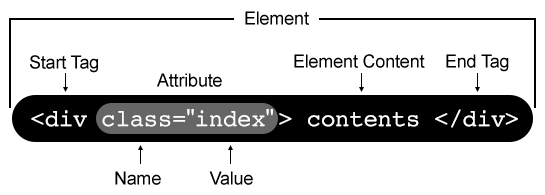

## Terminal, HTML, and CSS </br> ### - Presented by Ryan Shaw :) --- ## Terminal <p class="fragment"> What is the Terminal? </p> </br> </br> </br> <p class="fragment"> A text based interface to navigate your computer, manage files, and run programs </p> --- ## Terminal (cont.) Here are a few examples! <div style="text-align: left;"> Otherwise known as: </br> <p class="fragment" style="margin-left: 2rem;"> Command Line Interface - (CLI) </br> Shell - (Ex: command prompt, powershell, git bash) </p> </div> --- ## When to use Terminals? Why wouldn't we just use our graphical user interfaces that we're all used to? </br> </br> Wouldn't that be easier? </br> </br> <p class="fragment"> Not always </p> --- ## When to use Terminals (cont.)? <p class="fragment" style="text-align: left;"> Command line interfaces can be more practical in a number of circumstances! </br> </br> - Program automation </br> - Where performance matters </br> - Efficiently cover a lot of functionality </br> - Navigating around someone else's computer </p> --- ## File systems <p class="fragment"> Directories / folders </br> Files </p> --- ## Navigating File Systems <p style="color: cadetblue;"> Demo </p> --- ## File Path Formats **Absolute path:** <p class="fragment" style="font-size: 1.75rem; text-align: left;"> Determine the address of the file / directory starting at the root. </br> Ex. `C:\Users\Ryan\Code\SuperCoolCodingProject\bin` </p> </br> </br> **Relative path:** <p class="fragment" style="font-size: 1.75rem; text-align: left;"> Determine the address of a file / directory relative to an existing path </br> Ex. Working directory -> `C:\Users\Ryan\Code\` </br> `SuperCoolCodingProject\bin` </p> --- ## Running programs via the terminal Running a **registered** program via the terminal ```shell > git status ``` Running a **unregistered** program via the terminal ```shell > start "C:\Program Files (x86)\Steam\steamapps\common\RollerCoaster Tycoon Deluxe\RCT.EXE" ``` --- ## Other fun tricks in the terminal! - Press the up arrow key to cycle through your history of recent commands - Press tab to autocomplete commands! (Useful for long file names) - Press Ctrl+C to abort a long running command - Press shift+right click to open the command prompt from your current directory in file explorer --- ## Concept check! - When might we use terminals? - What are the pros and cons of using a terminal over a GUI? - When might we use a relative path over an absolute path? --- ## HTML The coding language of the web! Stands for `Hyper Text Markup Language` --- ## Markup Language vs Programming Language <p style="font-size: 1.75rem;">Markup - Used to control the presentation and structure of data</p> <p style="font-size: 1.75rem;">Programming - Used to issue commands to the computer leveraging logic, mathmatical operations, and create functionality</p> --- ## Examples of HTML ```html <h1>Hello World!</h1> ``` ```html <p>I'm a paragraph tag!</p> ``` --- ## Anatomy of HTML Element with Contents Example  Element without Contents Example ```html <img src="images/smiley-face.png" alt="A smiley face!"> ``` --- ## HTML - Attributes <p style="font-size: 1.75rem;">Element Specific Attributes - Attributes that work only on relevant HTML Elements</p> ```html <button disabled>Click Me!</button> ``` <p style="font-size: 1.75rem;">Global Attributes - Attributes that exist on all HTML elements</p> ```html <h1 id="main-header">I'm an example header!</h1> ... <button id="save" class="btn">Save</button> ``` --- ## HTML - Global Attributes Here are some of the most common global attributes! - id - class - style - title - hidden --- ## HTML - Content Content can either be plain text, or additional elements in some cases! ```html <button>Click me!</button> ``` ```html <h6>shopping list</h6> <!---This is an unordered list!---> <!--- in an `ul`, `li` are nested within as the content ---> <ul> <li>Bananas</li> <li>Strawberries</li> <li>Greek yogurt</li> </ul> ``` --- ## HTML - Live code examples <p style="color: cadetblue;"> Demo </p> --- ## Anatomy of an HTML Document ```html <!DOCTYPE html> <html> <head> <!--- This is a comment ---> <!--- HTML Elements in the head tag describe the page and aren't rendered ---> <meta charset="utf-8"> <title>My test page</title> </head> <body> <!--- HTML Elements in the body tag are visible on the web page ---> <img src="images/firefox-icon.png" alt="My test image"> </body> </html> ``` --- ## HTML head tag - Contains metadata pertaining to the website - Contains links to other required files for your webpage (such as Javascript files & CSS files) - Title tag is required, and has a big impact on if your website will be optimized for search engines (Will it show up when someone googles for your site) --- ## HTML body tag - Contains all the structured data that should be rendered on the page - (As seen in the live demo, it is where most of our structures are defined) --- ## Block Elements vs Inline Elements - Block elements always start on a new line, and take up the width of the page - Inline elements only take up as much width / height as its contents --- ## Block Elements vs Inline Elements examples <p style="color: cadetblue;"> Demo </p> --- ## CSS CSS stands for `Cascading Style Sheets` - Whereas HTML is used to define structure, CSS is used to define presentation / style --- ## CSS - syntax ```css selector { property1: value; property2: value; } ``` selector - a expression to reference html elements property / values - combinations --- ## CSS - selector example ```css /* this is an example of an element / tag selector */ h1 { ... } /* this is an example of a class selector */ .btn { ... } /* this is an example of an id selector */ #save-button { ... } ``` --- ## CSS - Selector Combinations ```css /* Element / class Combination Selector */ /* all h1 tags with the class main-header */ h1.main-header { ... } /* Descendant Selector */ /* all p tags which are within a div */ div p { ... } /* Child Selector */ /* all p tags which is a direct child of a div tag */ div > p { ... } ``` --- ## CSS - Selector Combinations (cont.) ```css /* Adjacent Sibling Selector */ /* first p tag which is directly after a div tag */ div + p { ... } /* General Sibling Selector */ /* all p tags that are next siblings of a div tag */ div ~ p { ... } ``` --- ## CSS - property value example ```css h1 { /* Property - color value - blue */ color: blue; } ``` <p style="color: cadetblue;"> Demo </p> --- ## CSS - referencing CSS files within HTML ```html <!DOCTYPE html> <html> <head> ... <link href="styles/basic-styles.css" rel="stylesheet" /> ... </head> <body> ... </body> ``` --- ## Concept check! - Within an HTML document, what tag does the rendered portion go in? What about the Metadata? - What is a common use case for the HTML attribute `class` and `id`? - When would we use one over the other? - --- # Studio [Link](https://education.launchcode.org/js-independent-track/chapters/html/studio.html) --- ## Terminal Resources - [Command Prompt Cheat Sheet](http://www.cs.columbia.edu/~sedwards/classes/2017/1102-spring/Command%20Prompt%20Cheatsheet.pdf) - [Mac terminal cheat sheet](https://www.makeuseof.com/tag/mac-terminal-commands-cheat-sheet/) - [Linux command line cheat sheet](https://media.cheatography.com/storage/thumb/davechild_linux-command-line.750.jpg?last=1582977076) --- ## HTML Resources - [Attribute Reference](https://www.w3schools.com/tags/ref_attributes.asp) - [Global Attribute Reference](https://www.w3schools.com/tags/ref_standardattributes.asp) - [Block and Inline Elements](https://www.w3schools.com/html/html_blocks.asp) --- ## CSS Resources - [CSS Intro material](https://www.w3schools.com/css/css_combinators.asp) - [CSS Combinators](https://www.w3schools.com/css/css_combinators.asp)